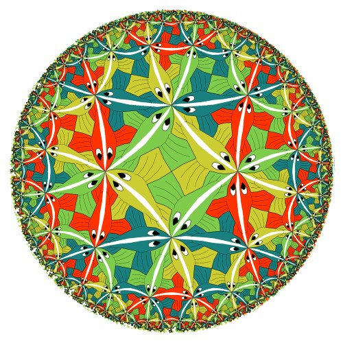
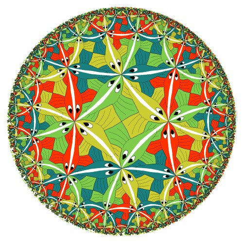

|
Advanced Number Theory: Seminar in Modular Forms Spring 2006 |
 |
|
Advanced Number Theory: Seminar in Modular Forms Spring 2006 |
 |
| Meeting times: | MWF 12:10-1:00, HH 667 |
| Prerequisites: | Undergraduate Number Theory & Complex Analysis (i.e., the equivalent of MATH 310 & 380) or consent of the instructor |
| Instructor: | Dr. Matthias Beck | ||||
| Office: | Thornton Hall 933 | ||||
| Office hours: |
|
& by appointment | |||
| Phone: | +1 415 405 3473 | ||||
| Email: |
|
Modular forms are meromorphic functions on the upper half plane that satisfy fundamental symmetry and growth conditions. Roughly speaking, you can think about them as functions that are invariant under Möbius transformations. (The Escher picture above essentially illustrates this invariance, after the upper half plane gets conformally mapped to the unit disk.) Modular forms are essential tools for the study of many elementary number-theoretic functions, such as the partition function (how many ways are there to write n as a sum of integers?), the sum-of-divisors function (sumd|n da for some fixed a in R), and the sum-of-squares function (how many ways are there to write n as a sum of k squares?), they form a powerful connection between algebraic and analytic number theory (as exemplified by Wiles' proof of Fermat's Last Theorem), but they also have a beautiful life of their own. In this seminar, we will study classical aspects of modular forms and some of their applications to elementary (but hard) problems in Number Theory.
Text book: Tom M. Apostol, Modular Functions and Dirichlet Series in Number Theory, 2nd edition, Springer.
Syllabus: I plan to cover Chapters 1, 2, 3, and 6 in the text book, that is:

"I believe that numbers and functions of Analysis are not the arbitrary result of our minds; I think that they exist outside of us, with the same character of necessity as the things of objective reality, and we meet them or discover them, and study them, as do the physicists, the chemists and the zoologists."
David Hilbert (1862-1943)
{kind=link}